Usage / Guide
Subscribe to a change,
starting from the client.
Once the server is running, a client connects to the Canal TCP port, declares a destination, and reads events one by one. Existing Canal clients can connect too, because the protocol has not changed.
Subscribe with the Rust client
canal-client is the repository's Rust SDK. After connecting, subscribe to a destination and read events as a stream; each next_event() returns one event.
use canal_client::CanalClient;
#[tokio::main]
async fn main() -> Result<(), Box<dyn std::error::Error>> {
let mut client = CanalClient::new("127.0.0.1", 11111)
.with_destination("example");
client.connect().await?;
let mut stream = client.subscribe(None).await?;
while let Some(Ok(event)) = stream.next_event().await {
println!("{}: {} @ {}.{}", event.journal_name, event.position,
event.schema_name, event.table_name);
}
Ok(())
}Events carry the journal name, position, schema, table and DML / DDL information. The full example and end-to-end test live in crates/canal-client/tests/e2e.rs.
CanalProtocol.proto and EntryProtocol.proto and keeps the wire protocol compatible.CLI
# run the server
./target/release/canal-rust server --config canal.yaml
# watch binlog events directly
./target/release/canal-rust dump --config canal.yaml
# meet Xiaoyun
./target/release/canal-rust petdump connects to MySQL and prints each event: count, journal / position, schema.table, entry type and DDL SQL or DML type. It does not start the TCP service, so it is useful for validating credentials and positions before deployment.
Scenario 1: sync to Kafka
Filter changes from one database and publish them to a Kafka topic as JSON flat messages.
canal:
mysql:
host: "10.0.0.1"
username: "replicator"
password: "secret"
filter:
pattern: "mydb\\..*"use canal_connector::kafka::{KafkaConfig, KafkaConnector};
use canal_instance::{CanalInstance, InstanceConfig};
use canal_common::{FilterPattern, LogPosition};
use std::sync::Arc;
let kafka_config = KafkaConfig::new("localhost:9092", "mysql-changes");
let kafka = Arc::new(KafkaConnector::new("kafka-sync", kafka_config).unwrap());
let config = InstanceConfig {
destination: "mydb-sync".into(),
mysql_host: "10.0.0.1".into(),
mysql_port: 3306,
mysql_username: "replicator".into(),
mysql_password: "secret".into(),
mysql_server_id: 2001,
start_position: LogPosition::new("mysql-bin.000001", 4),
filter: FilterPattern { pattern: "mydb\\..*".into(), black_list: "".into() },
store_buffer_size: 16384,
connector_names: vec!["kafka-sync".into()],
};The connector joins the same instance path through canal-sink; one change can enter the ring buffer and Kafka in parallel without blocking.
Scenario 2: multi-instance
canal-instance runs multiple destinations in one process. Each instance has its own binlog position, filters and store, useful for isolating prod / test in one Canal Rust process.
let manager = InstanceManager::new();
manager.register(CanalInstance::new(
InstanceConfig { destination: "prod".into(), ..prod_config }, vec![kafka_prod],
)).await;
manager.register(CanalInstance::new(
InstanceConfig { destination: "test".into(), ..test_config }, vec![kafka_test],
)).await;
manager.start_all().await?;Instance lifecycle: Created → Starting → Running (feed() loop) → Stopping → Stopped.
Scenario 3: Prometheus monitoring
curl http://localhost:9090/metrics
# canal_events_parsed_total 150000
# canal_events_dispatched_total 146800
# canal_instances_active 2| Metric | Type | Meaning |
|---|---|---|
canal_events_parsed_total | counter | Binlog events parsed from MySQL |
canal_events_filtered_total | counter | Events dropped by filters |
canal_events_dispatched_total | counter | Events delivered to connectors |
canal_dispatch_errors_total | counter | Connector dispatch failures |
canal_instances_active | gauge | Active instances |
/metrics has no authentication by default. Keep metrics_bind on loopback, on a private network, or behind an authenticating proxy; do not expose it publicly.Scenario 4: Admin API
The Admin API listens on main port + 1, loopback only by default. For containers or remote access, set server.admin_bind explicitly:
canal:
server:
bind: "0.0.0.0:11111"
admin_bind: "0.0.0.0:11112" # default: 127.0.0.1:11112curl http://localhost:11112/health
curl http://localhost:11112/api/instances
curl -X POST http://localhost:11112/api/instances/default/stop| Endpoint | Purpose |
|---|---|
GET / | Unauthenticated landing page: version, uptime, instance count and Xiaoyun |
GET /health | Health check with status / version / uptime_seconds |
GET /api/instances | Instance list and state |
POST /api/instances/:name/start | Start an instance |
POST /api/instances/:name/stop | Stop an instance |
GET /pet.svg | Xiaoyun's vector original |
AdminServer supports with_auth for Authorization: Bearer <token>; the CLI does not enable Admin auth by default. Protect the port with binding and firewall rules.
Open http://localhost:11112/ in a browser to see Xiaoyun and live status.
Runtime behavior
- Startup logs print
Xiaoyun is on duty, guarding the data canal, then the Canal, metrics and Admin addresses. - Binlog events enter an instance in batches: 256 events or a 200ms flush, avoiding per-event downstream wakeups.
Ctrl-Ctriggers graceful shutdown; the binlog task waits up to 5 seconds to flush remaining events.- Idle clients are disconnected after
idle_timeout_secs(default 3600 seconds). - When the ring buffer overflows, the oldest events are evicted; client Ack advances the consumption position.
Development
cargo build --release
cargo test --all
cargo clippy --all-targets -- -D warnings
cargo fmt --check --all
cargo doc --openTests live next to each crate: unit tests in src/tests*.rs or #[cfg(test)] mod tests, integration tests in crates/*/tests/. CI runs fmt, clippy, build, test and doc.

At this point a change should have travelled from MySQL to a downstream consumer. The rest is wiring it into your application.